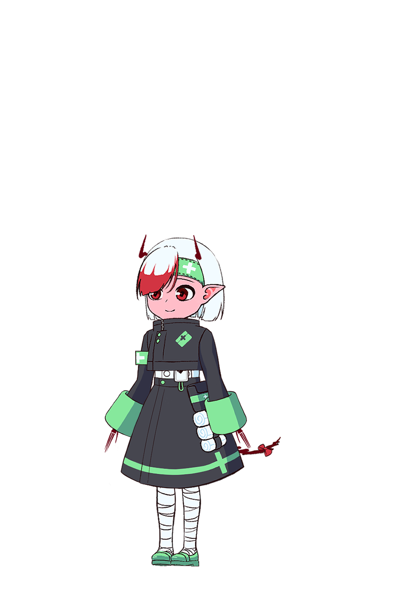
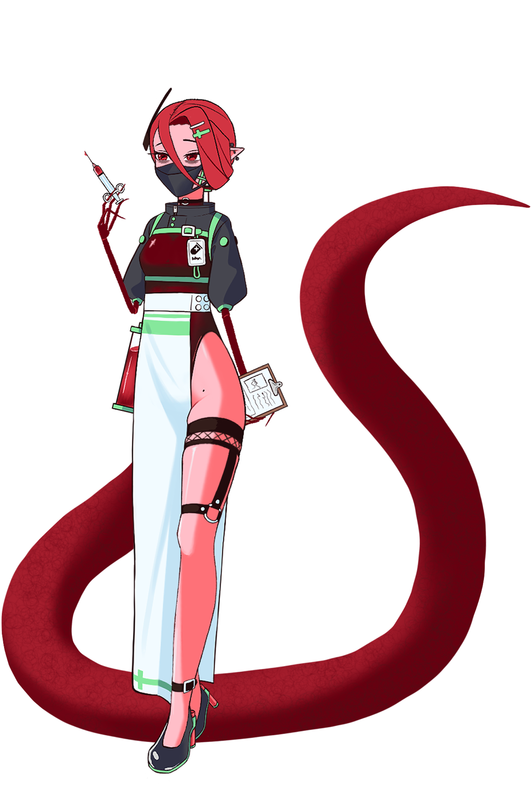
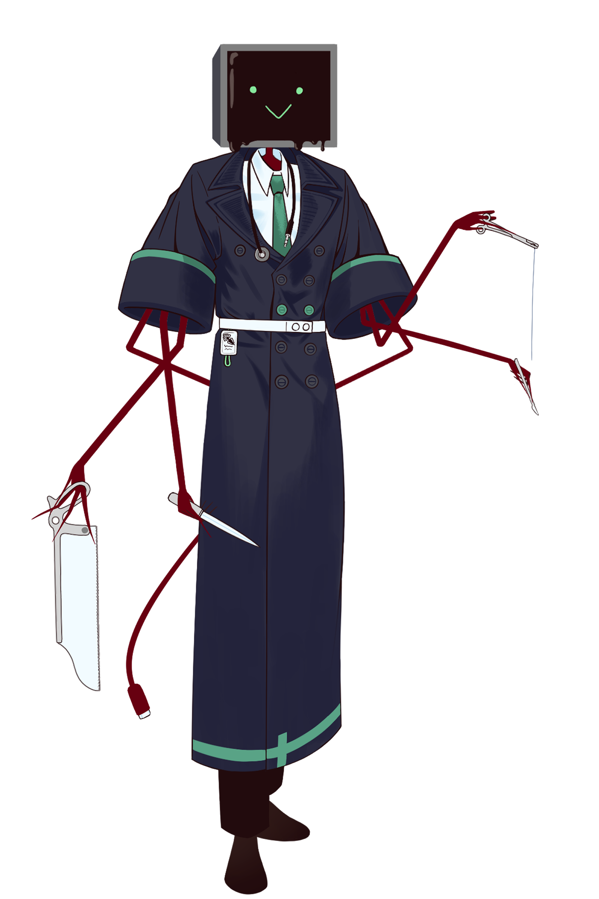
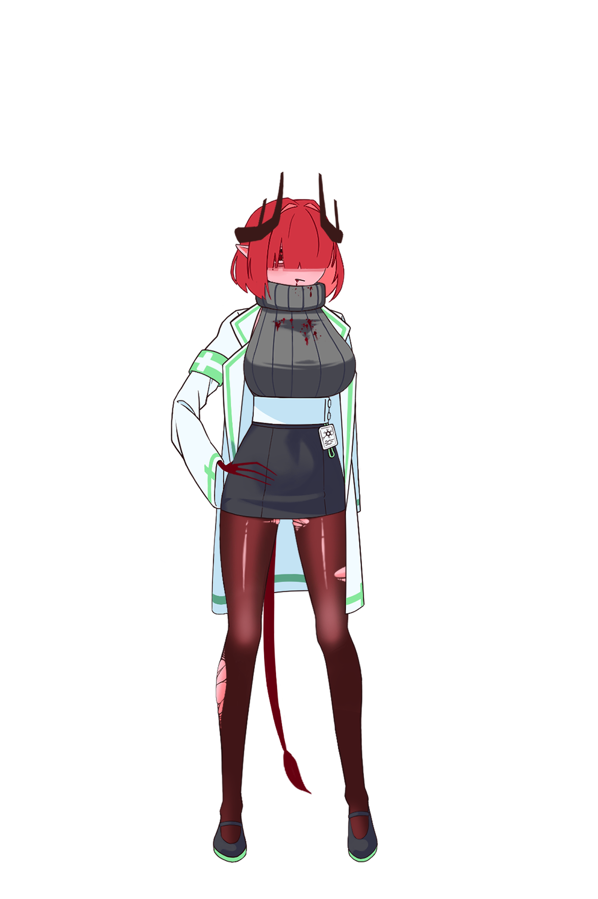

The Hellspital
20세기 적악마 지역에 존재하는 병원이다. 현재는 정상적인 의료 체계에 따라 환자를 치료하며, 진료와 연구, 수술, 행정 업무가 분리되어 운영된다.
20th Century · Red Demon District
더 헬스피탈.
적악마 지역의 환자와 기록을 관리하는 병원. 이곳의 의료진은 서로 다른 역할을 맡지만, 하나의 조직 아래에서 같은 환자를 다룬다.
Archive 01
병원 기록
20세기 적악마 지역에 존재하는 병원이다. 현재는 정상적인 의료 체계에 따라 환자를 치료하며, 진료와 연구, 수술, 행정 업무가 분리되어 운영된다.
추후 공개
추후 공개
Archive 02
의료진 기록



수습 간호사 · Trainee Nurse
병원에서 기초 응급처치와 치료 보조를 담당하는 수습 간호사.
“그거 뭐에요? 만져도 돼요?.”



의약 연구원 · Medical Researcher
약물과 의료 자료를 연구하는 병원의 의약 연구원. 치료에 필요한 약품과 연구 기록을 관리한다.
“이번에 성공만 하면...”



3
외과의 · Surgeon
병원내 가장 솜시 좋은 외과의. 머리속엔 슬라임 같은 점성이 높은 검은 액체가 살아 움직인다. 감정의 개입을 줄이고 모든 판단을 논리로 검증하려 한다.
“그것 참.. 흥미롭군요.”



부원장 · Vice Director
병원의 재정과 자원 배분을 관리하는 부원장.
“구두 보고는 받지 않아. 서면으로 제출해.”
Archive 03
ACCESS DENIED
현재 계정에는 이 기록을 열람할 권한이 없습니다.